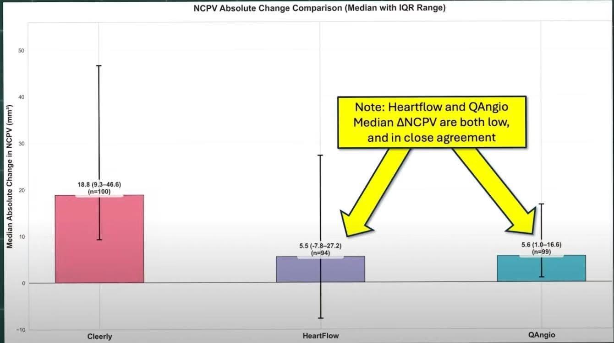

(no text — see the shared post below)
Here’s the results from the reanalysis of the Keto-CTA study, using QAngio and HeartFlow software.
Even after the reanalysis, the keto diet in the Keto-CTA study is worse than the standard American diet (Nature-CT study), when compared head to head.
As you can see from the charts, the plaque progression (NCPV) is still worse than people eating a standard American diet (SAD).
Using QAngio and Heartflow software, the plaque progression is +5.5 mm^3 [aqua] and +5.6 mm^3 [light purple] in Keto-CTA.
Using Cleerly software, the plaque progression was +18.8 mm^3 [red] in Keto-CTA.
For comparison, plaque progression on the SAD diet in the Nature-CT study was +4.9 mm^3, using Cleerly [green].
Again for comparison, plaque regression on a DASH diet plus statins was -39.5 mm^3 [dark blue] in the Disco-CT study:
↪ DISCO-CT: DASH diet plus statins reversed soft plaque by about 40 mm3 in a year
The Nature-CT study used the exact same CT scanners as Keto-CTA at the Lundquist Institute in California. It used the same Cleerly software. The average age of participants was the same (55yo), and the basic protocols and principle investigator (Mathew Budoff) of both studies were the same. Neither group was taking statins or other cholesterol medications:
facebook.com/share/v/1Ep8TWhgLE
It is an apples to apples comparison.
Even after the reanalysis, the keto diet in Keto-CTA [aqua] is worse than the standard American diet in Nature-CT [green], when compared head to head.
————-
Edit 10/25/26-
It is true that the baseline plaque in the Nature-CT study was a little bit lower than in Keto-CTA, to start. Some have argued that this invalidates the comparison, “Plaque begets plaque”. But the difference was small, median 27.5mm^3 (Nature-CT, Cleerly) verses median 44mm^3 (Keto-CTA, Cleerly).
It is also true that the Keto-CTA cohort was very healthy and active. These people were at very low baseline risk in virtually every respect, except for their high LDL. That was not true of the Nature-CT cohort. The bottom line is that the Keto-CTA cohort was significantly healthier than the Nature-CT cohort in almost all respects, except for their very high LDL and slightly higher baseline plaque.
Now compare Keto-CTA to the Disco-CT study, which tested a DASH diet + statins. The baseline plaque in Disco-CT was almost 10x higher than in Keto-CTA, mean 413mm^3 (Disco-CT, QAngio) verses median 44mm^3 (Keto-CTA, Cleerly). Yet there was still major regression of -39.5mm^3 in Disco-CT compared to progression of 5.5mm^3 in Keto-CTA. The DASH diet + statins worked much better than the keto diet, even in a population with nearly 10x higher baseline plaque.
#ketoctareanalysisHD #ketoctaHD #ketoctasummaryHD

